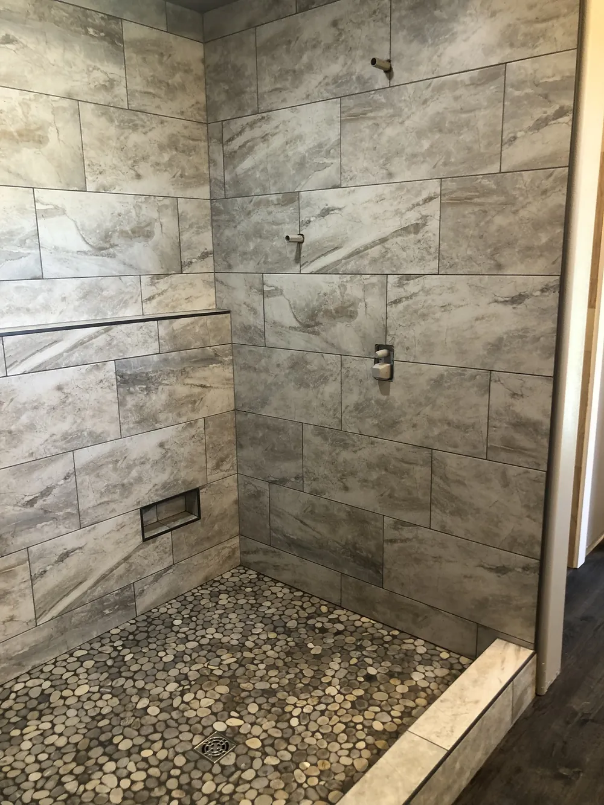
Walk-in showers.
Easy to step into, with no tub to climb over.
Our specialty
Get the shower you've been picturing, built by a tile setter with 28 years in the trade and waterproofed to stay dry for decades. No leaks, no surprises, no dust through the house.
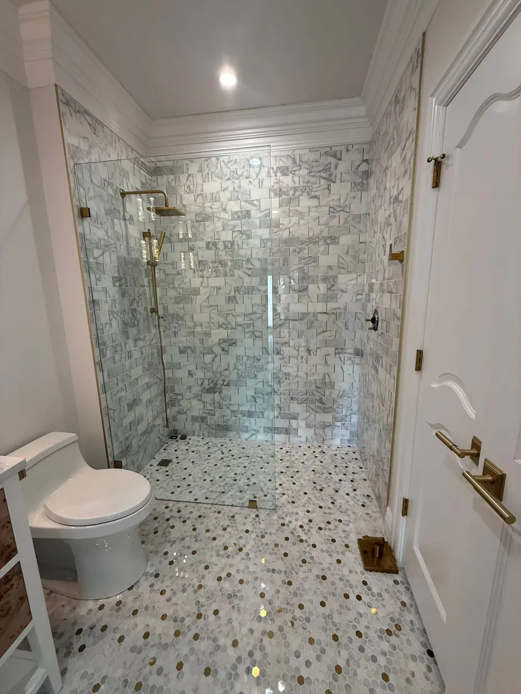
Four State Custom Floors builds custom tile showers across Missouri, Kansas, Oklahoma and Arkansas. Most showers run $4,000 to $12,000 and take 7 to 14 working days, depending on the size and details.
The way we've done it for 28 years: the owner on every job, a written quote and a full cleanup.
Your old shower or tub comes out with the room sealed off from the rest of the house.
The Schluter waterproofing system goes on the walls and floor before any tile goes up.
Water runs to the drain instead of sitting in the corners.
We plan the layout with you before the first cut.
Built in and waterproofed along with the rest of the shower.
You get your bathroom back clean and ready to use.
A few of the styles homeowners ask us for most.

Easy to step into, with no tub to climb over.
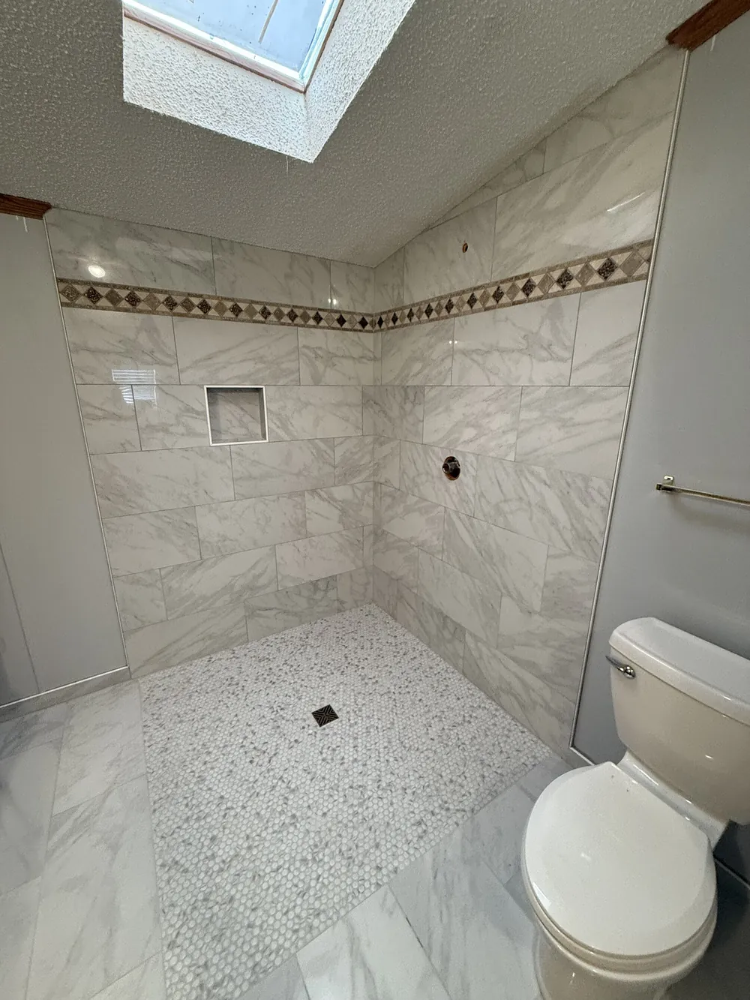
Level with the bathroom floor, so there's nothing to trip on.
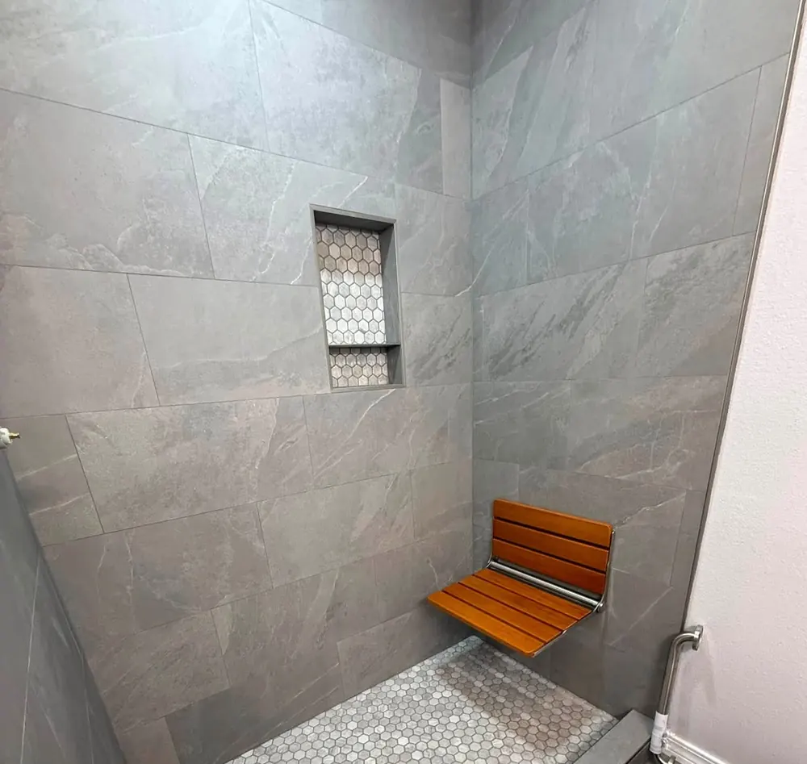
Trade the tub you never use for a shower you'll use every day.
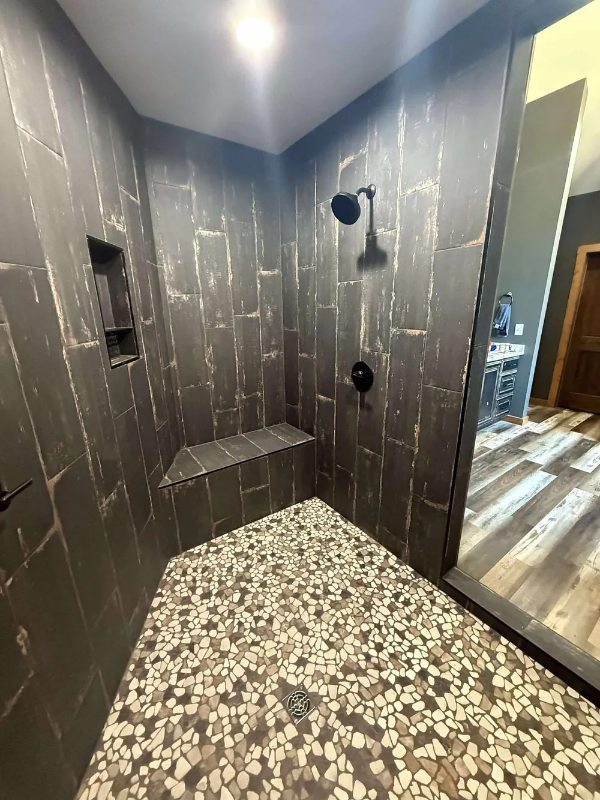
A place for your shampoo and a place to sit.
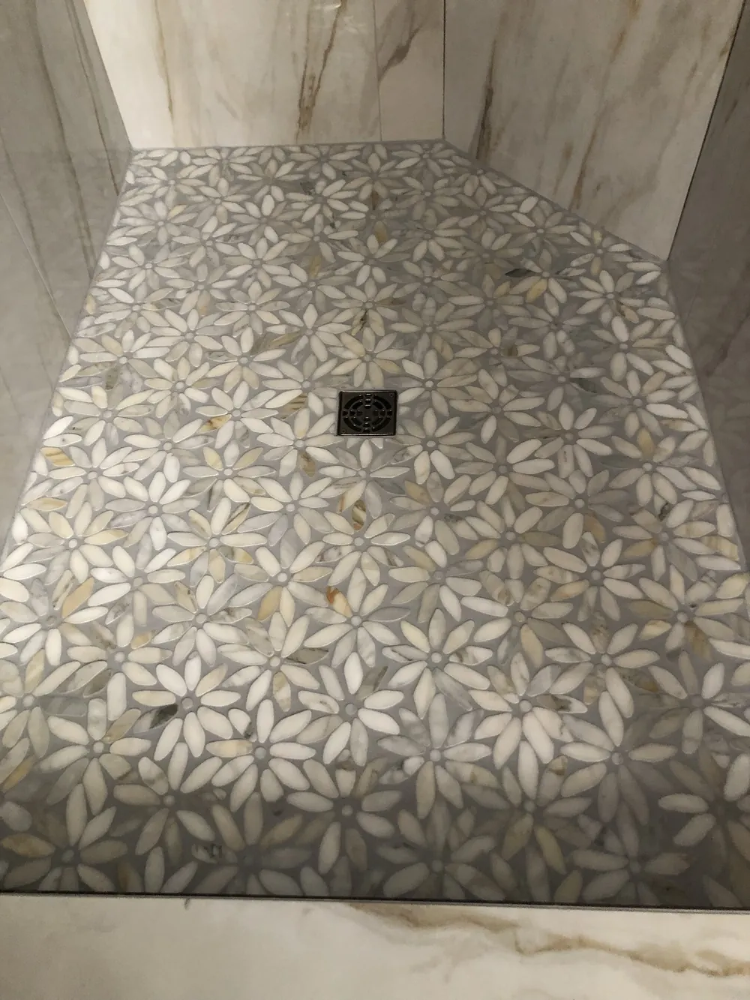
Mosaics, herringbone, stacked or offset layouts.
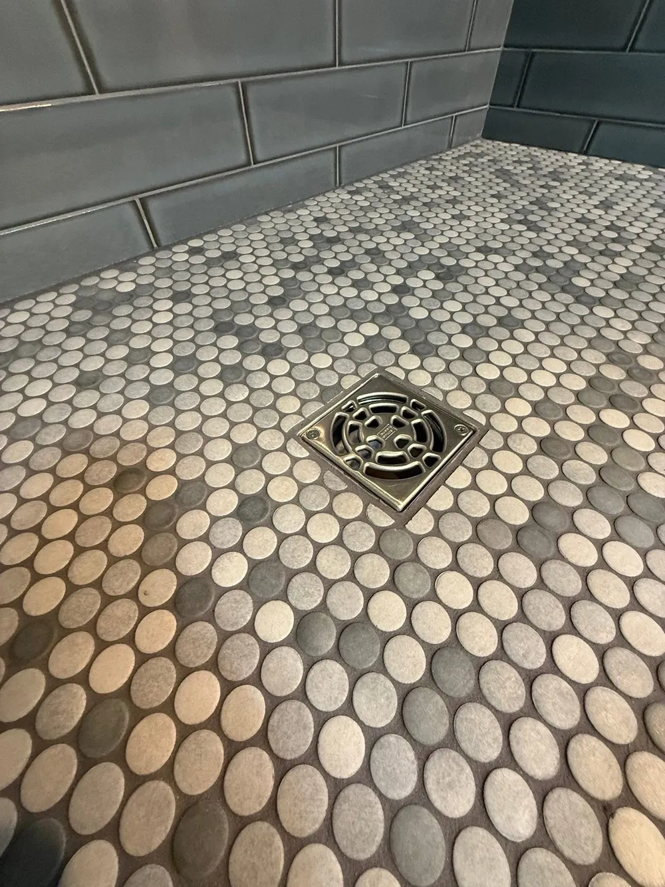
Linear or square drains to match your tile.
Text or call with a picture of your current shower. We'll get back to you the same day.
We measure, help you choose the layout and tile, and put the price in writing.
The old shower comes out, the room stays sealed off, and the waterproofing goes in.
The tile goes up, the grout goes in, and we clean up before we leave.
Owner on every job · Written quote, no surprises · Dust control · Full cleanup
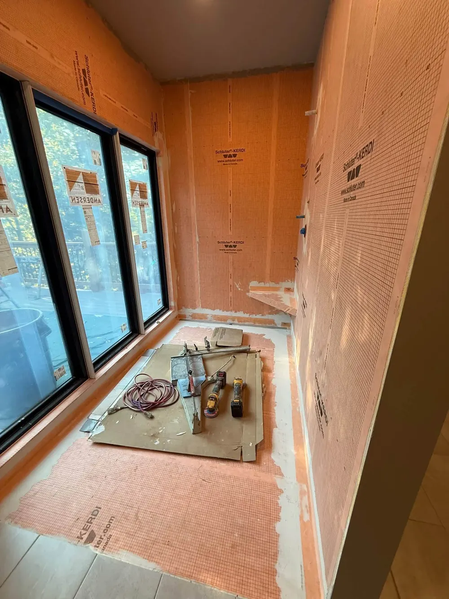
Real showers we've built around the Four State area.
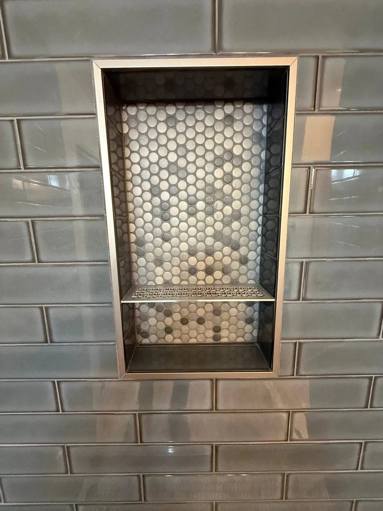
Noel, MO
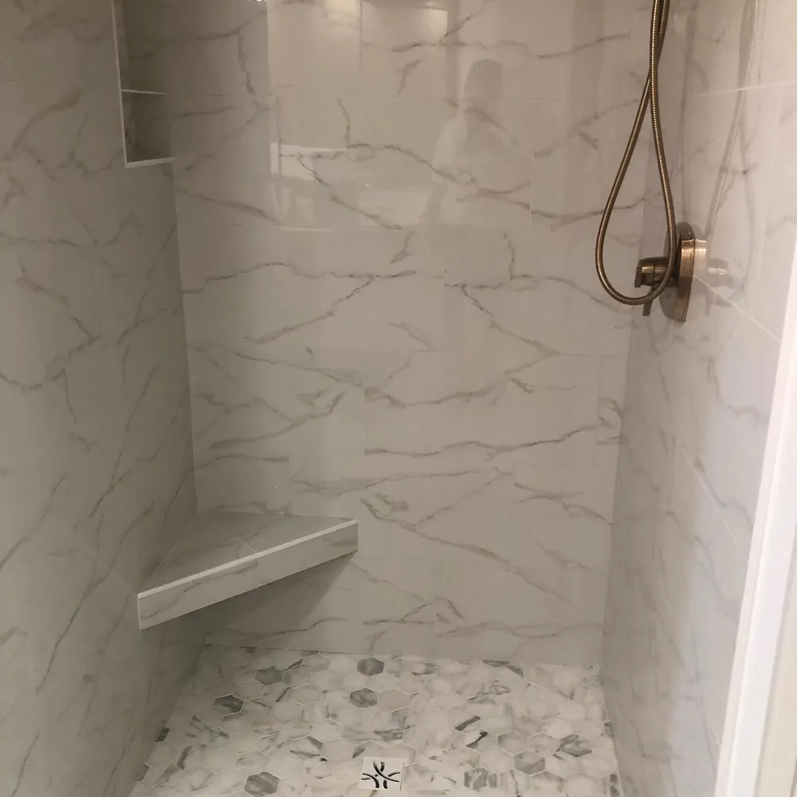
Grove, OK
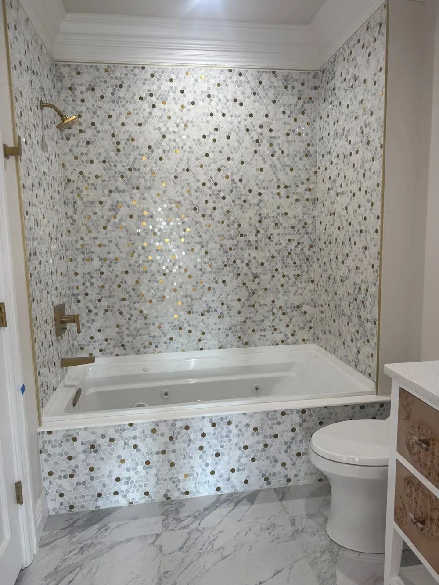
Rogers, AR
Have a question that isn't here? Call 417-825-8240 and talk it over.
Most custom tile showers we build across the Four State area run $4,000 to $12,000, with larger custom showers costing more. That includes the setting and Schluter waterproofing materials. Size, tile choice, niches, benches and glass drive the price. You get a written quote before any work starts.
Most showers take 7 to 14 working days, depending on the size and details of the shower. You get the schedule in writing with your quote.
Every shower gets the Schluter waterproofing system behind the tile, so water stays away from the studs and subfloor.
Yes. The tub comes out and a tile shower is built in its place. We can make minor adjustments to the drain, and a plumber moves any water lines.
Not the shower being rebuilt. If you have another bathroom, plan to use it while the job is underway.
We can install over-the-counter shower doors. For custom glass, most homeowners hire a glass company once the tile is done.
You pick out and buy the tile, so you get exactly the look you want. Our price covers the setting and Schluter waterproofing materials, and we're happy to help you choose.
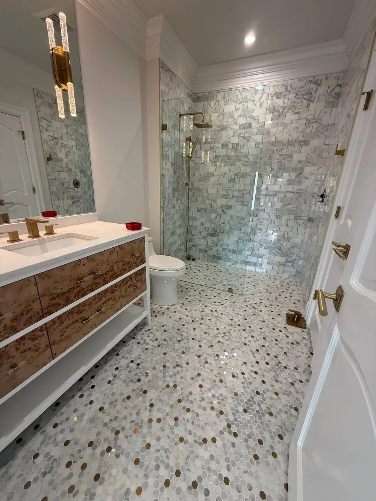
Mosaic, porcelain, natural stone and large format tile, set flat and level.
Learn more ›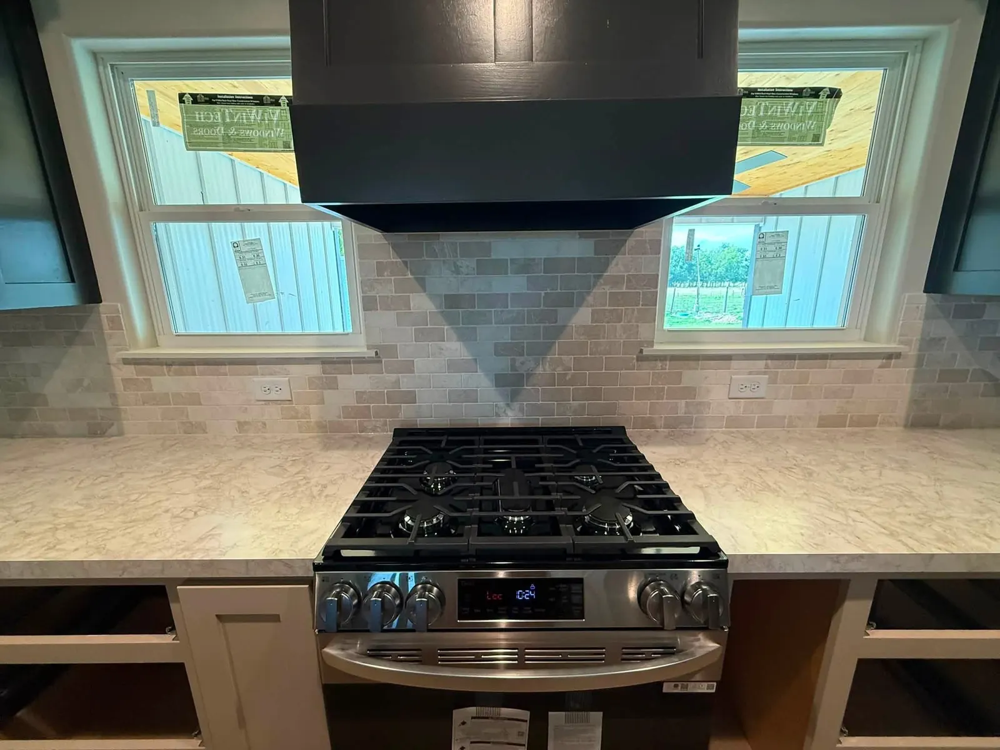
Kitchen backsplashes with clean cuts around every outlet and edge.
Learn more ›
Your old tile comes out. The dust stays in that room.
Learn more ›Send us a photo of the one you have now and we'll tell you what it takes.